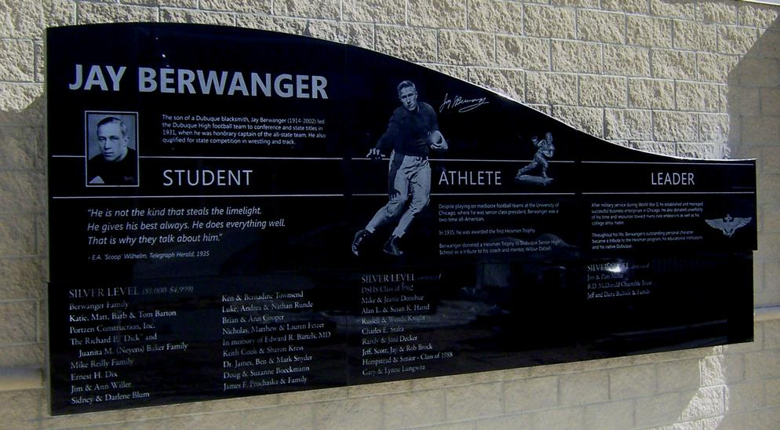
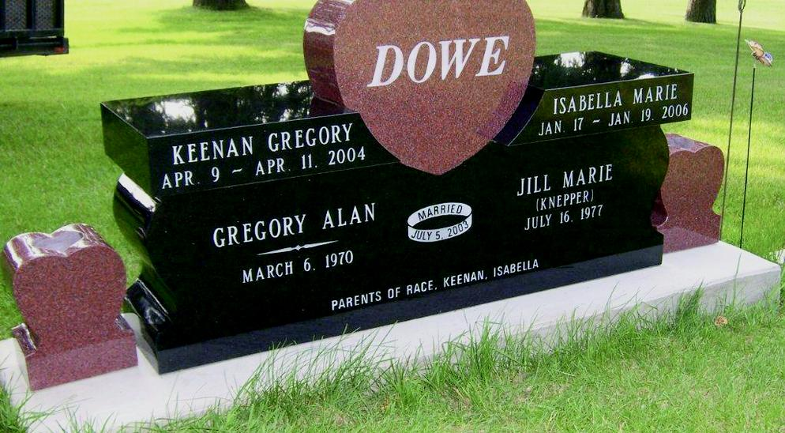
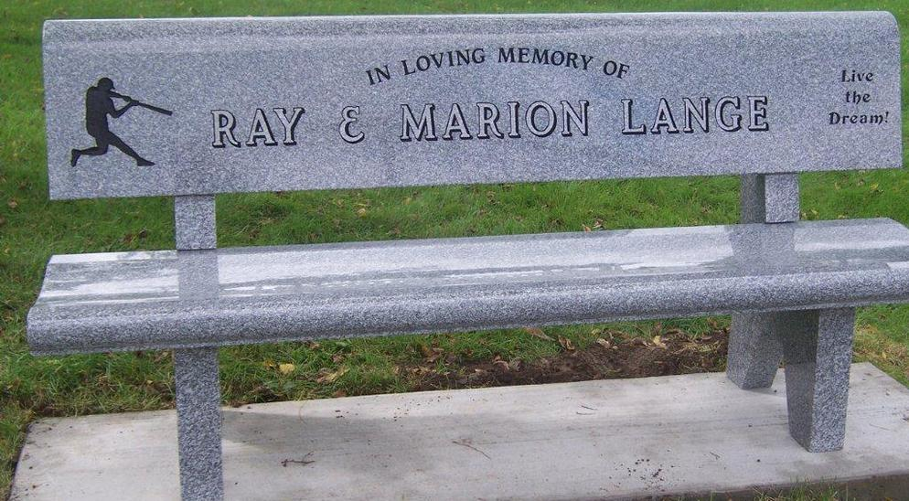
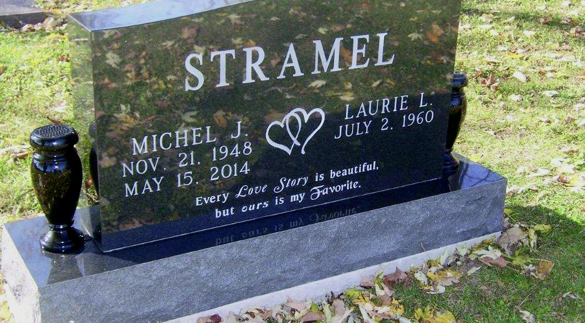
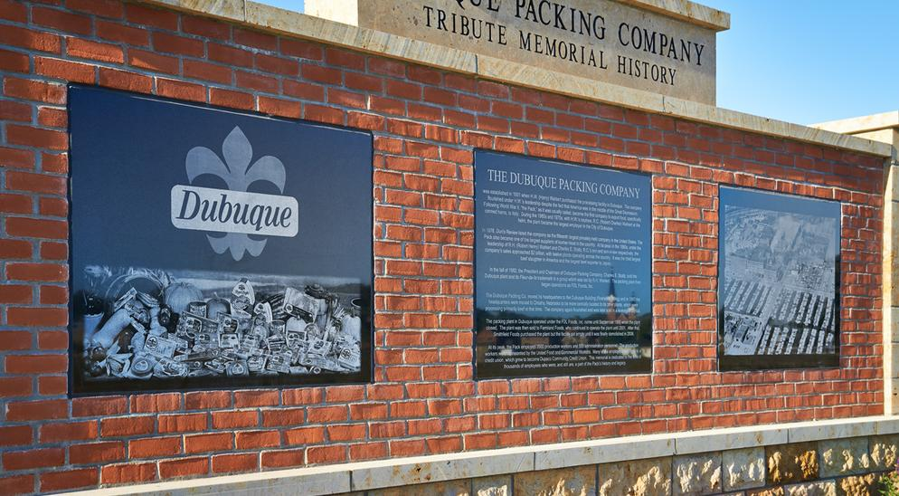
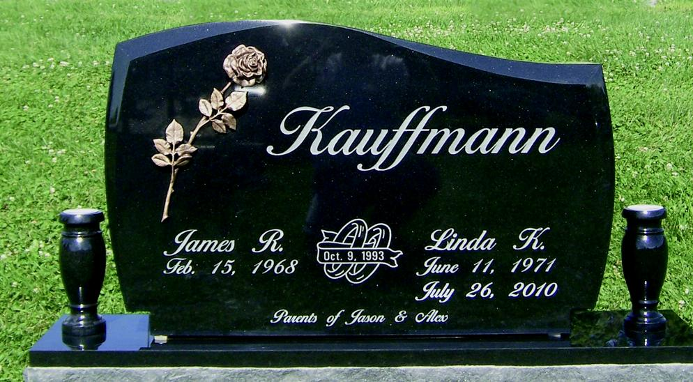
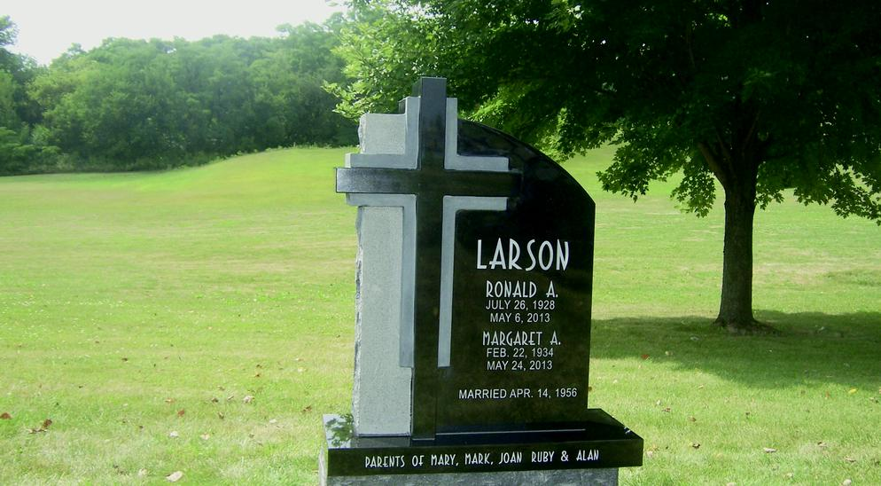
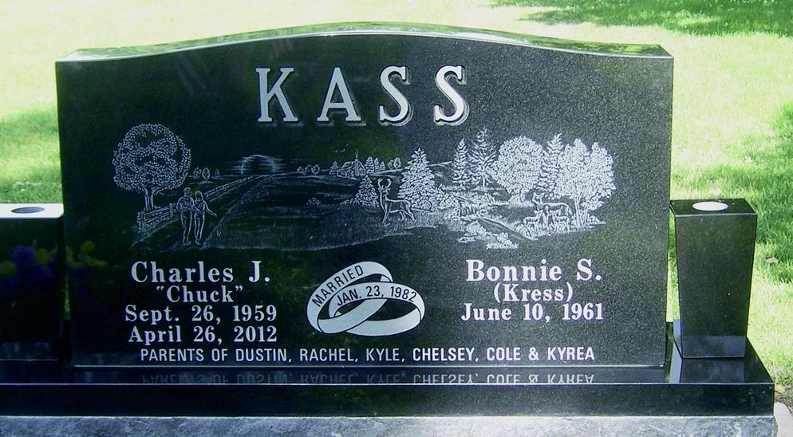

Sample
Sample review text. A family’s own words from Google would be quoted here.
Sample

Dubuque, Iowa
Let us help guide you in selecting a memorial your family will be proud of for generations to come.
Sample
Sample review text. A family’s own words from Google would be quoted here.
Sample
Sample
Sample review text. This card shows where a real review would sit.
Sample
Sample
Sample review text. The reviewer’s first name would appear with the quote.
Sample
Sample
Sample review text. Nothing in these cards is a review of Brannon Monument Company.
Sample
We have the expertise, ability, and creativity to handle any project of request.
As you browse our website, you will see some of the many different choices and selections we offer. When you stop in to visit our showroom and displays, you'll see the largest, most impressive display of memorials in the area.
Brannon Monument Co. specializes in personal and customized designs.
You can select personal choices with regard to color, shape, finish, lettering styles, design, and ornamentation. Please take some time to view some of the photographs from our large portfolio.
Today, people ar choosing to select thier monuments and cemetary lots in advance.
Pre-planning makes sense to many families and can give peace of mind not only to you, but also to the ones you love. It is perfectly logical and sensible.
Memorialization is a record and celebration of a life and of those who loved that life.
The practice of choosing cremation as an alternative to the traditional internment has not changed the public's desire to remember and honor life
Photographs
Brannon Monument Co. specializes in personal and customized designs.








Three locations
we are located at 2100 Stone Hill Dr. in Dubuque, Iowa, in the former Key West True Value Building, behind the Kwik Stop/DQ.
Monday - Friday 9 - 5, Saturday 9 - 12.
Open Saturdays March- August
we are conveniently located on 7th Avenue/Business Hwy 151, in Marion, Iowa. With a proud presence in the Cedar Rapids area, we have strong relationships with many cemetaries.
200 7th Ave.
Marion, IA 52302
Monday - Friday 9 - 4
Closed Fridays December - February
we are located at 416 W. Main St., just west of the downtown, next to the Maquoketa River bridge.
416 W. Main St.
Manchester, IA 52057
Monday - Friday 9 - 4
Saturdays and evenings by appointment.
Appointments are available at both locations outside of office hours. Please call in advance to schedule at 800.499.6798 or 563.583.6318 (DBQ) | 319.373.0090 (MARION) | 563.927.3597 (MANCHESTER)
Memorials are so much more today. Because memories matter... Love is the reason.